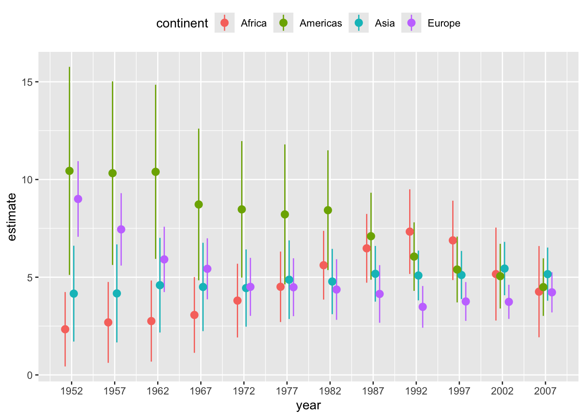
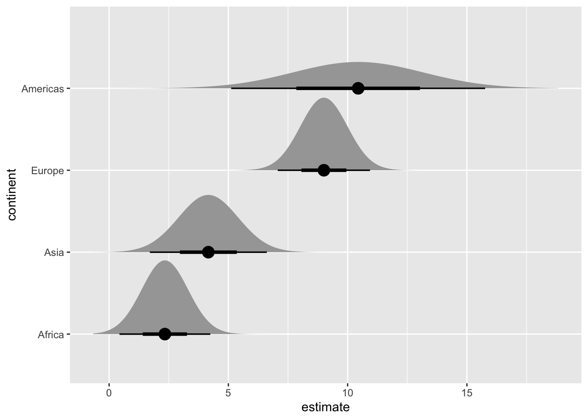
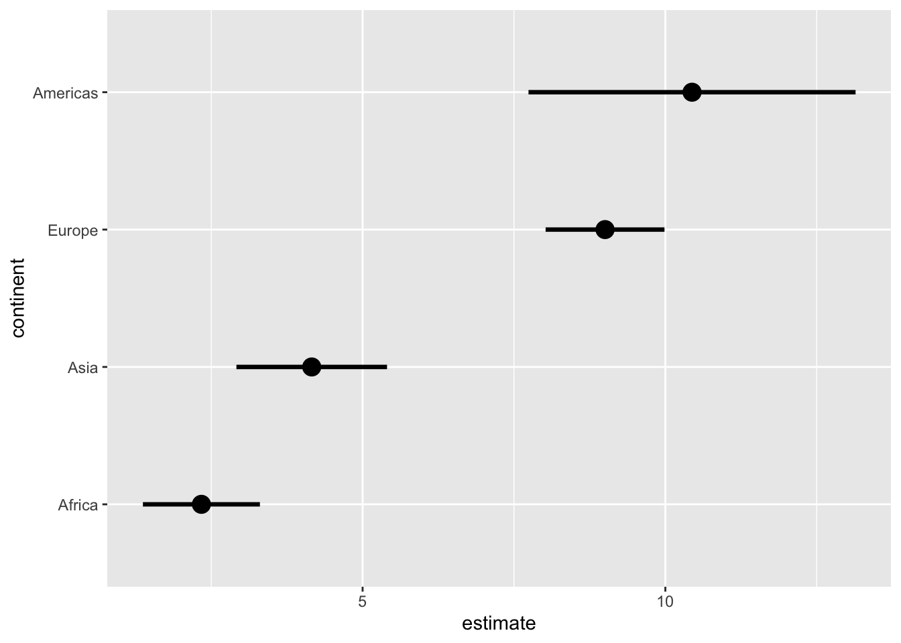
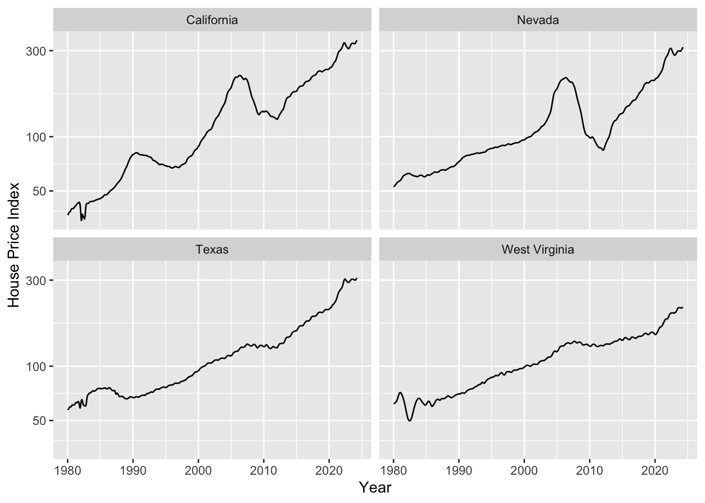
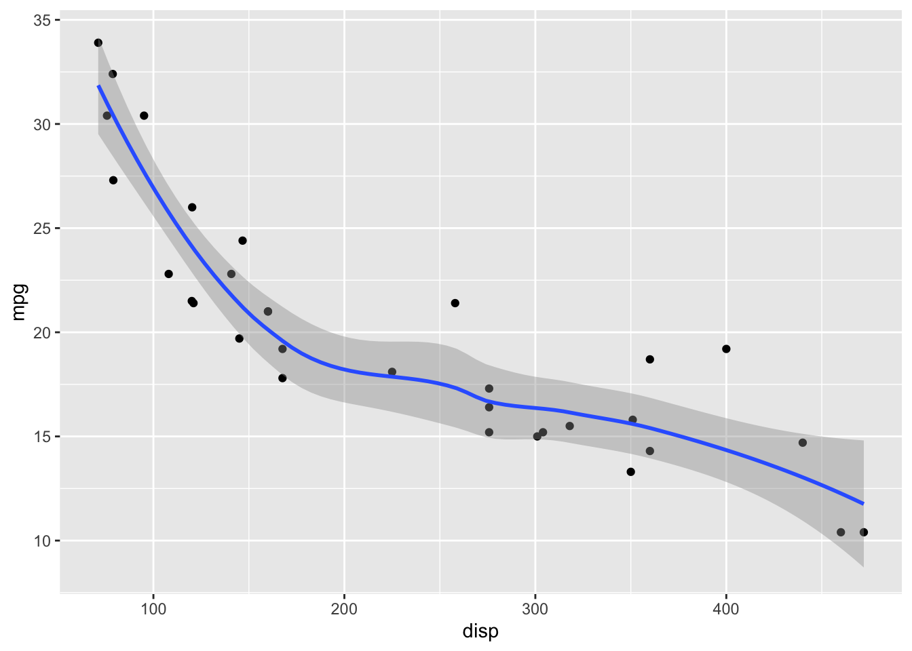
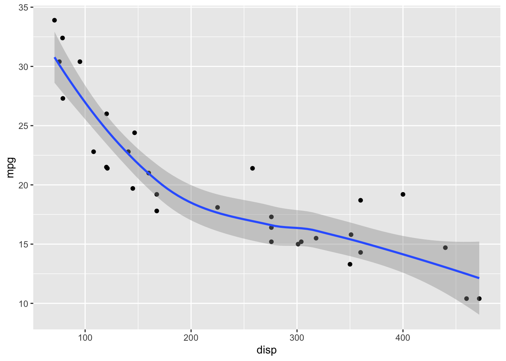
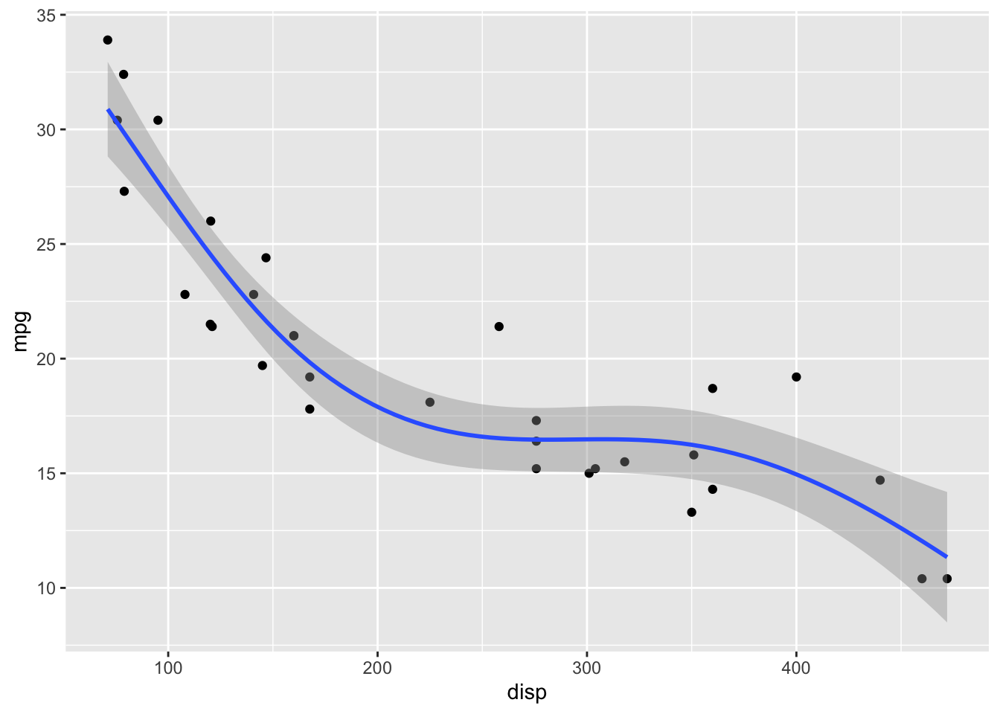

# Run this command to install the required packages.
# You need to do this only once.
install.packages(
c(
"tidyverse", "broom", "ggdist", "distributional", "gapminder",
"mgcv", "gratia", "gganimate", "gifski"
)
)Visualizing Uncertainty and Trends
Required packages
Install the required packages:
1. Error bars and other uncertainty visualizations
We’ll be working with the gapminder dataset that contains information about life expectancy and GDP per capita for hundreds of countries around the globe.
library(tidyverse)
library(broom) # for extracting regression parameters
library(gapminder) # for dataset
gapminder %>%
filter(
continent != "Oceania",
year %in% c(1952, 1967, 1982, 1997)
) |>
ggplot(aes(log(gdpPercap), lifeExp)) +
geom_point(size = 0.5, color = "#0072B2") +
geom_smooth(method = "lm", formula = y ~ x, color = "black") +
xlab("log GDP per capita") +
scale_y_continuous(
name = "life expectancy",
breaks = c(40, 60, 80)
) +
facet_grid(year ~ continent)
Let’s calculate uncertainties in the regression slopes and then visualize those.
lm_data <- gapminder |>
nest(data = -c(continent, year)) |>
mutate(
fit = map(data, ~lm(lifeExp ~ log(gdpPercap), data = .x)),
tidy_out = map(fit, tidy)
) |>
unnest(cols = tidy_out) |>
select(-data, -fit) |>
filter(term != "(Intercept)", continent != "Oceania")
lm_data# A tibble: 48 × 7
continent year term estimate std.error statistic p.value
<fct> <int> <chr> <dbl> <dbl> <dbl> <dbl>
1 Asia 1952 log(gdpPercap) 4.16 1.25 3.33 0.00228
2 Asia 1957 log(gdpPercap) 4.17 1.28 3.26 0.00271
3 Asia 1962 log(gdpPercap) 4.59 1.24 3.72 0.000794
4 Asia 1967 log(gdpPercap) 4.50 1.15 3.90 0.000477
5 Asia 1972 log(gdpPercap) 4.44 1.01 4.41 0.000116
6 Asia 1977 log(gdpPercap) 4.87 1.03 4.75 0.0000442
7 Asia 1982 log(gdpPercap) 4.78 0.852 5.61 0.00000377
8 Asia 1987 log(gdpPercap) 5.17 0.727 7.12 0.0000000531
9 Asia 1992 log(gdpPercap) 5.09 0.649 7.84 0.00000000760
10 Asia 1997 log(gdpPercap) 5.11 0.628 8.15 0.00000000335
# ℹ 38 more rowsIn standard ggplot we have to calculate and draw error bars manually.
ggplot(lm_data) +
aes(
x = year, y = estimate,
ymin = estimate - 1.96*std.error,
ymax = estimate + 1.96*std.error,
color = continent
) +
geom_pointrange(
position = position_dodge(width = 2)
) +
scale_x_continuous(
breaks = unique(gapminder$year)
) +
theme(legend.position = "top")
# alternative version with error bars with caps
ggplot(lm_data) +
aes(
x = year, y = estimate,
ymin = estimate - 1.96*std.error,
ymax = estimate + 1.96*std.error,
color = continent
) +
geom_errorbar(
position = position_dodge(width = 2),
width = 3 # cap width
) +
geom_point( # geom_errorbar() doesn't draw the point estimate
position = position_dodge(width = 2),
size = 2
) +
scale_x_continuous(
breaks = unique(gapminder$year)
) +
theme(legend.position = "top")We can create many more uncertainty visualizations with the ggdist package.
library(ggdist)
library(distributional) # for dist_normal()
# subset to year 1952 only
lm_data_1952 <- lm_data |>
filter(year == 1952) |>
mutate(
continent =
fct_reorder(continent, estimate)
)
# half eyes
ggplot(lm_data_1952, aes(x = estimate, y = continent)) +
stat_halfeye(
aes(dist = dist_normal(
mu = estimate, sigma = std.error
)),
point_size = 4
)
# confidence strips
ggplot(lm_data_1952, aes(x = estimate, y = continent)) +
stat_gradientinterval(
aes(dist = dist_normal(
mu = estimate, sigma = std.error
)),
point_size = 4,
fill = "skyblue"
)
# quantile dotplot
ggplot(lm_data_1952, aes(x = estimate, y = continent)) +
stat_dotsinterval(
aes(dist = dist_normal(
mu = estimate, sigma = std.error
)),
point_size = 4,
fill = "skyblue",
quantiles = 20
)
# regular errorbars
ggplot(lm_data_1952, aes(x = estimate, y = continent)) +
stat_pointinterval(
aes(dist = dist_normal(
mu = estimate, sigma = std.error
)),
point_size = 4
)
# use .width to customize the error intervals shown
ggplot(lm_data_1952, aes(x = estimate, y = continent)) +
stat_pointinterval(
aes(dist = dist_normal(
mu = estimate, sigma = std.error
)),
point_size = 4,
#.width = c(.68, .95, .997) # 1, 2, 3 SD
.width = .68 # 1 SD only
)
Exercises
Visualize the uncertainty in the regression slopes for the iris dataset.
ggplot(iris, aes(Sepal.Length, Sepal.Width)) +
geom_point() +
geom_smooth(method = "lm", formula = y ~ x) +
facet_wrap(~Species, nrow = 1)
# your code here2. Hypothetical Outcome Plots
We’ll be working with the blue jays dataset which contains various body size measurements of blue jays birds. Specifically we’ll be looking at the relationship between the head length and the body mass, which we can model with a linear regression. We want to display the uncertainty in this regression line with an animated hypothetical outcomes plot.
Step 1: Fit a linear model and extract samples from the fitted model.
library(mgcv) # to fit generalized additive models with gam()
library(gratia) # to generate samples from fitted model
# read in data
blue_jays <- read_csv(
"https://wilkelab.org/dataviz_shortcourse/datasets/blue_jays.csv",
show_col_types = FALSE
)
# subset to male birds only
blue_jays_male <- blue_jays |>
filter(sex == "M")
# fit a linear model
# need to use gam() so we can take advantage of the functions provided by gratia
fit <- gam(head_length_mm ~ body_mass_g, data = blue_jays_male, method = "REML")
# new data table with x values only, for model prediction
blue_jays_new <- tibble(
body_mass_g = seq(from = 59, to = 82, length.out = 100)
) |>
mutate(.row = row_number()) # needed to join in fitted samples
# fitted_values() returns mean and confidence band
fv <- fitted_values(fit, data = blue_jays_new)
# fitted_samples() returns independent samples from the fitted model
fs <- fitted_samples(fit, data = blue_jays_new, n = 30, seed = 10) |>
left_join(blue_jays_new, by = ".row")
# static plot with mean and confidence band
ggplot(blue_jays_male, aes(body_mass_g)) +
geom_ribbon(
data = fv, aes(ymin = .lower_ci, ymax = .upper_ci),
fill="grey70", color = NA, alpha = 1/2
) +
geom_point(aes(y = head_length_mm), color = "grey30", size = 1.5) +
geom_line(
data = fv, aes(y = .fitted),
color = "#0072B2", linewidth = 1
)
# static plot with fitted samples
ggplot(blue_jays_male, aes(body_mass_g)) +
geom_ribbon(
data = fv, aes(ymin = .lower_ci, ymax = .upper_ci),
fill="grey70", color = NA, alpha = 1/2
) +
geom_point(aes(y = head_length_mm), color = "grey30", size = 1.5) +
geom_line(
data = fs,
aes(y = .fitted, group = .draw),
color = "#0072B2", linewidth = 0.3
)
Step 2: Make animations with gganimate.
library(gganimate) # to make animations
anim_obj <- ggplot(blue_jays_male, aes(body_mass_g)) +
geom_ribbon(
data = fv, aes(ymin = .lower_ci, ymax = .upper_ci),
fill="grey70", color = NA, alpha = 1/2
) +
geom_point(aes(y = head_length_mm), color = "grey30", size = 1.5) +
geom_line(
data = fs,
aes(y = .fitted, group = .draw),
color = "#0072B2", linewidth = 0.3
) +
transition_manual(.draw) # this is the only change needed to create an animation
# printing the anim object is sufficient to create the animation
anim_obj`nframes` and `fps` adjusted to match transition
In practice we may want to customize how exactly the animation is rendered, such as the exact width/height, number of frames, frames per seconds shown, etc.
animate(
anim_obj,
fps = 5, # frames per second
width = 5.5*100, height = (3/4)*5.5*100, # width and height in pixels
res = 100 # resolution (dots per inch)
)We can save as gif or mp4 with anim_save().
anim_save(
"blue-jays-HOP.gif",
anim_obj,
fps = 5,
width = 5.5*300, height = (3/4)*5.5*300,
res = 300
)Exercises
Visualize the fitted model in this plot of fuel efficiency versus displacement as a hypothetical outcome plot. Note that the fitted model here is y ~ s(x, bs = "cs"). (This is the default formula that geom_smooth() uses when fitting generalized additive models, which it does by default for data sets with 1000 points or more.)
ggplot(mtcars, aes(x = disp, y = mpg)) +
geom_smooth(method = "gam", formula = y ~ s(x, bs = "cs")) +
geom_point(color = "grey30")
# your code here3. Trendlines and de-trending
The first example will be trends in the US housing market by state.
# Freddie Mac House Price Index data
# from: https://www.freddiemac.com/research/indices/house-price-index
fmhpi <- read_csv(
"https://wilkelab.org/dataviz_shortcourse/datasets/fmhpi.csv",
show_col_types = FALSE
) |>
filter(year >= 1980) # trends are weird before 1980
# plot house price index (HPI) for a few states
fmhpi |>
filter(state %in% c("California", "Nevada", "West Virginia", "Texas")) |>
ggplot(aes(date_dec, hpi)) +
geom_line() +
xlab("Year") +
scale_y_log10(name = "House Price Index") +
facet_wrap(~state)
As housing prices are growing exponentially, we need to fit a trend line in log space. Let’s do this and plot.
# we fit trendlines separately for all states
fmhpi_trends <- fmhpi |>
nest(data = -state) |>
mutate(
# fit in log space (never fit exponentials in linear space!)
fit_log = map(data, ~lm(log(hpi) ~ date_dec, data = .x)),
# predict long-term trend from fitted model
hpi_trend_log = map2(fit_log, data, ~exp(predict(.x, .y)))
) |>
select(-fit_log) |>
unnest(cols = c(data, hpi_trend_log))
fmhpi_trends |>
filter(state %in% c("California", "Nevada", "West Virginia", "Texas")) |>
ggplot(aes(date_dec, hpi)) +
geom_line(aes(color = "Raw HPI")) +
geom_line(aes(y = hpi_trend_log, color = "trendline")) +
xlab("Year") +
scale_y_log10(name = "House Price Index (HPI)") +
scale_color_manual(
name = NULL,
values = c("Raw HPI" = "#0072B2", trendline = "#D55E00")
) +
facet_wrap(~state) +
theme(legend.position = "bottom")
Now we can de-trend by dividing the raw value by the trendline.
fmhpi_trends |>
filter(state %in% c("California", "Nevada", "West Virginia", "Texas")) |>
ggplot(aes(date_dec, hpi/hpi_trend_log)) +
geom_hline(yintercept = 1, linewidth = 0.2) +
geom_line(color = "#0072B2") +
xlab("Year") +
scale_y_log10( # important, still need to use log scale
name = "HPI de-trended",
limits = c(0.5, 2)
) +
facet_wrap(~state)
In the second example we will be decomposing monthly CO2 readings into the long-term trend, seasonal fluctuations, and the remainder.
# read in the data
co2 <- read_csv(
"https://wilkelab.org/dataviz_shortcourse/datasets/co2.csv",
show_col_types = FALSE
)
# use complete years only
start_year <- 1959
end_year <- 2023
co2_reduced <- filter(co2, year >= start_year & year <= end_year)
# convert data to time series object
response <- co2_reduced$co2_ave
co2_ts <- ts(
data = response,
start = start_year,
end = c(end_year, 12),
frequency = 12 # we have 12 time points per year
)
# perform STL analysis (Seasonal Decomposition of Time Series by Loess)
co2_stl <- stl(co2_ts, s.window = 7)
# extract components and put together into one table
co2_detrended <- tibble(
date_dec = co2_reduced$date_dec,
response,
seasonal = t(co2_stl$time.series)[1, ],
trend = t(co2_stl$time.series)[2, ],
remainder = t(co2_stl$time.series)[3, ]
)
# plot
co2_detrended |>
rename("monthly average" = response) |>
pivot_longer(-date_dec, names_to = "component", values_to = "co2") |>
mutate(
component = fct_relevel(component, "monthly average", "trend", "seasonal", "remainder")
) |>
ggplot(aes(date_dec, co2)) +
geom_line() +
facet_wrap(~component, scales = "free_y", ncol = 1)
Exercises
Exercises for the HPI data:
Make plots of raw and de-trended HPI data for other US states. Can you find interesting patterns?
Perform a linear (as opposed to logarithmic) de-trending and see how the results differ.
# your code hereExercise for seasonal decomposition: Perform STL analysis on both temperature and precipitation data for Austin, TX. Explore different time ranges for your analysis. What trends are you seeing? Do you think the decomposition works for precipitation data?
# monthly temperature and precipitation data for Austin, TX
atx_temps <- read_csv(
"https://wilkelab.org/dataviz_shortcourse/datasets/atx_temps.csv",
show_col_types = FALSE
)
# pick a range of years to analyze; the earliest complete year is 1939
# and the latest complete year is 2023.
start_year <- 1970
end_year <- 2010
temps_reduced <- filter(atx_temps, year >= start_year & year <= end_year)
# perform the analysis both for average temperature and for precipitation
response <- temps_reduced$temp_ave
# response <- temps_reduced$precip# continue here ...4. Fitting different types of smoothers
When fitting non-linear smoothers to data via geom_smooth(), there are extensive options to customize the smoother and as a result to get quite different fits. Most people just use the geom defaults, but you should be aware that there are customization options and that they substantially affect what you get.
Let’s start with the default options. For small datasets (<1000 data points), geom_smooth() uses LOESS.
ggplot(mtcars) +
aes(disp, mpg) +
geom_point() +
# default for small datasets: loess smoothing
geom_smooth()`geom_smooth()` using method = 'loess' and formula = 'y ~ x'
LOESS has a parameter span that determines how smooth the fit will be. Default in geom_smooth() is span = 0.75. This may not be the best choice for your specific dataset.
# smaller span values make the fit more wiggly, larger span values make it more smooth.
ggplot(mtcars) +
aes(disp, mpg) +
geom_point() +
geom_smooth(span = 0.25)`geom_smooth()` using method = 'loess' and formula = 'y ~ x'
ggplot(mtcars) +
aes(disp, mpg) +
geom_point() +
geom_smooth(span = 1)`geom_smooth()` using method = 'loess' and formula = 'y ~ x'
ggplot(mtcars) +
aes(disp, mpg) +
geom_point() +
geom_smooth(span = 2)`geom_smooth()` using method = 'loess' and formula = 'y ~ x'
For datasets with more than 1000 points, geom_smooth() uses a generalized additive model (GAM) with formula y ~ s(x, bs = "cs"). We can choose these settings manually by specifying the method and formula parameters:
ggplot(mtcars) +
aes(disp, mpg) +
geom_point() +
geom_smooth(method = "gam", formula = y ~ s(x, bs = "cs"))
GAMs fit splines to the data, and there is a wide array of different types of splines and spline settings (such as number of knots) that you can explore. For example, bs = "cs" specifies cubic regression splines with shrinkage. In the following, I will show a few more examples. Enter ?mgcv::smooth.terms in your R console to see the full documentation of available options.
ggplot(mtcars) +
aes(disp, mpg) +
geom_point() +
geom_smooth(
method = "gam",
# cubic spline with five knots
formula = y ~ s(x, k = 5, bs = 'cr')
)
ggplot(mtcars) +
aes(disp, mpg) +
geom_point() +
geom_smooth(
method = "gam",
# thin plate spline, three knots
formula = y ~ s(x, k = 3)
)
ggplot(mtcars) +
aes(disp, mpg) +
geom_point() +
geom_smooth(
method = "gam",
# Gaussian process spline, six knots
formula = y ~ s(x, k = 6, bs = 'gp')
)
Exercises
Explore the different smoothing options for the cars93 dataset. Pay particular attention to the behavior of the smoothing line on the right end of the data range, where the number of available points is sparse.
cars93 <- read_csv(
"https://wilkelab.org/SDS375/datasets/cars93.csv",
show_col_types = FALSE
)
ggplot(cars93) +
aes(x = Price, y = Fuel.tank.capacity) +
geom_point() + theme_bw(14) +
geom_smooth()`geom_smooth()` using method = 'loess' and formula = 'y ~ x'
# your code here